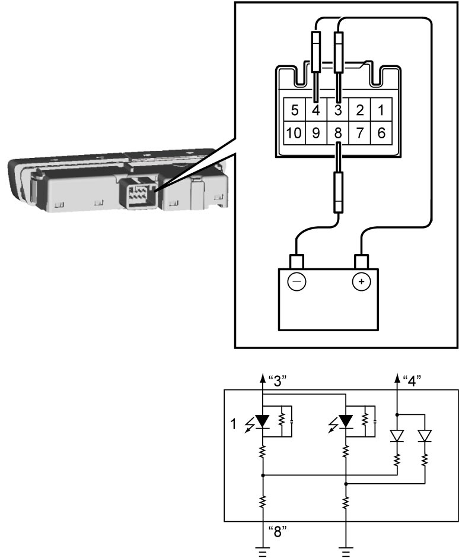
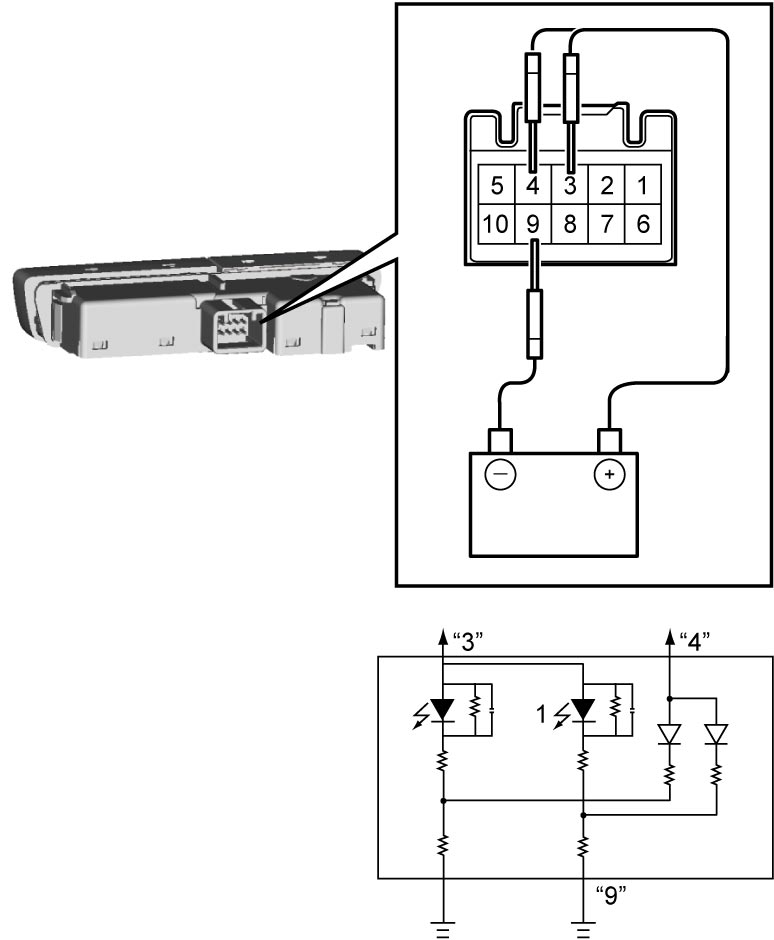

8B
| Passenger Air Bag Deactivation Indicator Inspection (If Equipped) |
1)Remove passenger air bag deactivation indicator. 
2)Check “PASSENGER AIR BAG OFF” and “PASSENGER AIR BAG ON” indicators as follows. If any faulty conditions is found, replace hazard switch.
a)Connect battery positive (+) terminal to terminal “9” and negative (–) terminal to terminal “10” as shown.
b)Check that “PASSENGER AIR BAG OFF” indicator (1) lights up.
c)Connect battery positive (+) terminal to terminal “4” and check that “PASSENGER AIR BAG OFF” indicator reduces an illumination.


 "Expand image")
d)Connect battery positive (+) terminal to terminal “9” and negative (–) terminal to terminal “3” as shown.
e)Check that “PASSENGER AIR BAG ON” indicator (1) lights up.
f)Connect battery positive (+) terminal to terminal “4” and check that “PASSENGER AIR BAG ON” indicator reduces an illumination.

 "Expand image")